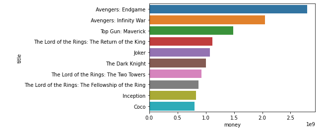
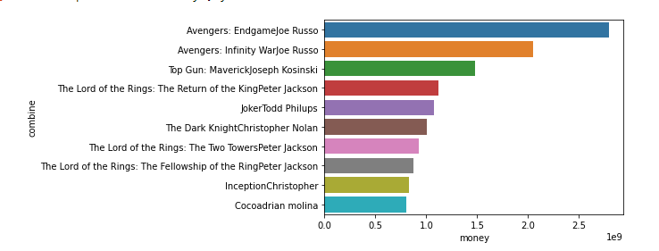

Next Big Netflix Movie
With popularity and competitiveness in the streaming market declining Netflix needs to find a way to gain back its subscribers. Netflix has made series and movies before that have brought views back and made lots of money such as The Crown, Brigerton, Lucifer, and most notably Stranger Things. Netflix is wanting to make the next big movie that can increase viewership, but who should direct it, how much money could netflix possibly make on the movie, what is the best lead actor for the movie, and what is the best genre of movie to produce? Using the database The Movie Database(TMDB) as a source for the most recent data on movies and everything having to deal with television. Taking the available data and finding all the ids of the top rated movies with the highest revenue. We can then take the ids to find the name, the director, genera, and revenue of the films. Usings a pandas data frame to set up the data as well as seaborn to visualize the data.
Who are the ten directors with the highest revenue for a single movie? Who are the ten directors with the highest average revenue across all of their movies?
When regards to a movie it is the main role of the director to make the movie as best as possible. So which director could produce the best movie for netflix. Everyone knows that Stephen Spillberg is one of the greatest directors, but what direct has the highest grossing film or films.
 As seen by the data above, Avengers: Endgame, Avengers: Infinity War, Top Gun: Maverick, all the Lord of the Ring movies, Joker, The Dark knight, Inception, and Coco are the top grossing films. Joe Russo is the director for both the Averages films, he would have to be the best pick for an action movie but Joe Russo has already directed a movie for Netflix The Gray Man. The Gray Man did not even make a profit losing Netflix close to 200 million dollars, So they would have to find a different director to film the movie. The runner up is Joseph Koniski with Top Gun: Mavirk, a suitable choice but the new Top Gun movie had a ton of hype around due to its success in 1986 with the original Top Gun. The same could be said about the Lord of the Ring movies, so in conclusion maybe it isn't the director it is the movie itself and whether or not it can be popular with new generations and old. Joe Russo and David Yates have the highest average revenue per film. The Avengers and Harry Potter movies were very popular and made millions of dollars, but there is a connection to pop culture and The directors have directed fewer films than most but had the greatest outcomes.
-----------------------
Who should we hire as the lead actor in our upcoming action movie?
The movie magic is made by the actors and their commitment to the characters. Some moves are popular due the fact they have top actors in them. Now in the data there are popular actors but some of them are deceased and cannot act in the next Netflix movie. There are also actors who really only do a specific type of movie and some would be more applicable than others. Like Tom Holland is a very popular actor but he is already part of the MCU and other big franchises that it would be costly to put him on the cast.
-----------------------
Is action the best type of movie to make?
The most grossing film genre is Adventure not action. Action is second but is closely tied to family movies. An adventure movie might be more profitable, but most movies incorporate multiple genres.
-----------------------
In conclusion, it might not be in netflix's best interest to create a movie due to past attempts. As well as the fact that Big releases like the new Black Panther movie are coming out, If Netflix were to make a movie it would have to be good enough to compete with the competition. While having the best of the best for the movie is important it is also important to look at culture and many other factors. A further study should be done on most popular gerenas. Do movies with certain age restrictions make more or less? Is a movie based on a book a better route? Historically sequels are not very well liked, but a further look into their revenue and popularity might be beneficial to Netflix. With changes in the way we consume media it might be more beneficial to have a series instead of a movie.